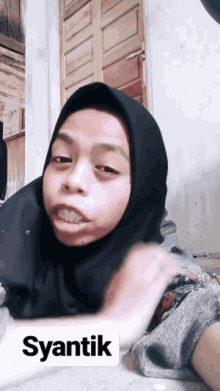

SELAMAT DATANG

VISI: MENJADIKAN KONI SEBAGAI ORGANISASI YANG INDEPENDEN DAN PROFESIONAL, UNTUK MEMBANGUN PRESTASI OLAHRAGA NASIONAL, GUNA MENGANGKAT HARKAT DAN MARTABAT BANGSA INDONESIA.
MISI: MENINGKATKAN PRESTASI OLAHRAGA INDONESIA, MELALUI PEMBINAAN ORGANISASI DAN PENINGKATAN SUMBER DAYA OLAHRAGA YANG EFEKTIF, PENGGUNAAN SPORT SCIENCE & TECHNOLOGY, SERTA MEMBANGUN KARAKTER OLAHRAGAWAN GUNA MENCIPTAKAN ATLET YANG BERPRESTASI DI TINGKAT DAERAH, NASIONAL DAN INTERNASIONAL.
PROKER: Sharing pertandingan antar DAERAH dan NEGARA pada masing-masing cabang. Turnamen Futsal, Volly, Basket, Catur dan Badminton antar sekolah dalam negri atau antar sekolah luar negri Temu Akrab antar anggota Olahraga yang baru maupun yang lama. Rapat Tahunan (pertanggug jawaban dan pembentukan kepengurusan yang baru).
"STOP DREAMING START DOING"
Manfaat pertama dari olahraga adalah meningkatkan daya tahan tubuh agar tidak mudah terserang penyakit. Kathleen Zelman, MPH, RD, LD, direktur kesehatan WebMD, menjelaskan ketika olahraga tubuh akan lebih bebas bergerak. Ini akan memicu proses metabolisme dan sirkulasi darah menjadi lebih lancar. Hasilnya tubuh lebih sehat dan kuat serta tak mudah terserang penyakit.
Gerakan yang dilakukan saat olahraga merangsang semua bagian tubuh agar lebih fleksibel. Otot tubuh juga menjadi lebih elastis dan tidak kaku. Bagi anak-anak olahraga amat penting untuk menunjang postur tubuhnya. Menurut Kathleen, anak yang rutin berolahraga sejak kecil akan memiliki postur tubuh yang tegap dan tidak membungkuk saat berjalan
Saat tubuh digunakan untuk beraktivitas, kalori yang ada di dalamnya akan terbakar lebih sempurna. Kathleen menjelaskan kalori ini akan diproses menjadi energi secara keseluruhan tanpa ada yang tersisa dan berpotensi menimbulkan tumpukan lemak tubuh. Tubuh mendapatkan suplai nutrisi yang cukup untuk melancarkan proses pertumbuhan dan perkembangan secara ideal.
Selain bermanfaat bagi fisik tubuh, Kathleen kembali menjelaskan jika olahraga teratur juga memiliki peran yang baik untuk meningkatkan daya pikir anak. Buah dari aktivitas fisik yang dilakukan secara rutin membuat otak lebih tercukupi asupan gizinya. Otak berkembang secara berkala dan membuat si kecil lebih pintar saat proses belajar tiba.
Kebaikan ini mungkin yang amat dibutuhkan oleh si kecil. Gerakan yang dilakukan saat berolahraga merangsang organ pencernaan juga aktif bergerak. Organ pencernaan akan bekerja lebih optimal untuk menyesuaikan kebutuhan energi bagi tubuh. Makanan yang masuk ke dalam perut akan terproses secara keseluruhan dan membuat si kecil akhirnya mengalami lapar. Dia pun akan makan lebih lahap beragam hidangan sehat yang sudah Anda sajikan. Demikian penjelasan terakhir Kathleen Zelman yang juga ahli gizi ini.